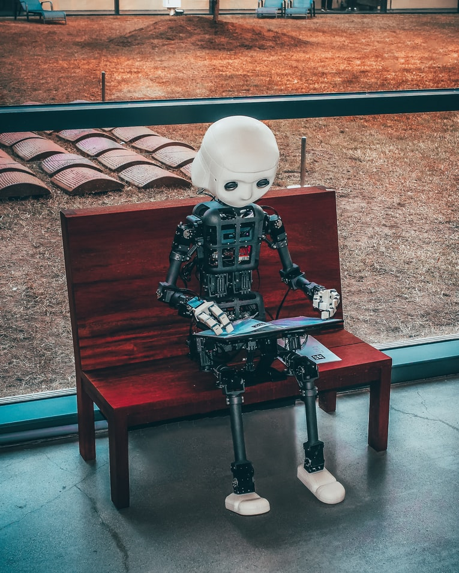
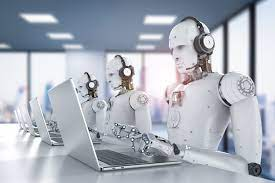
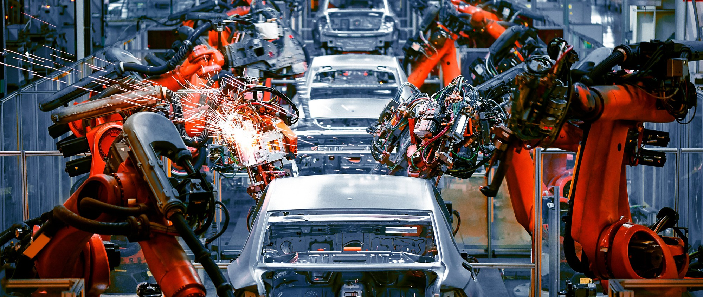
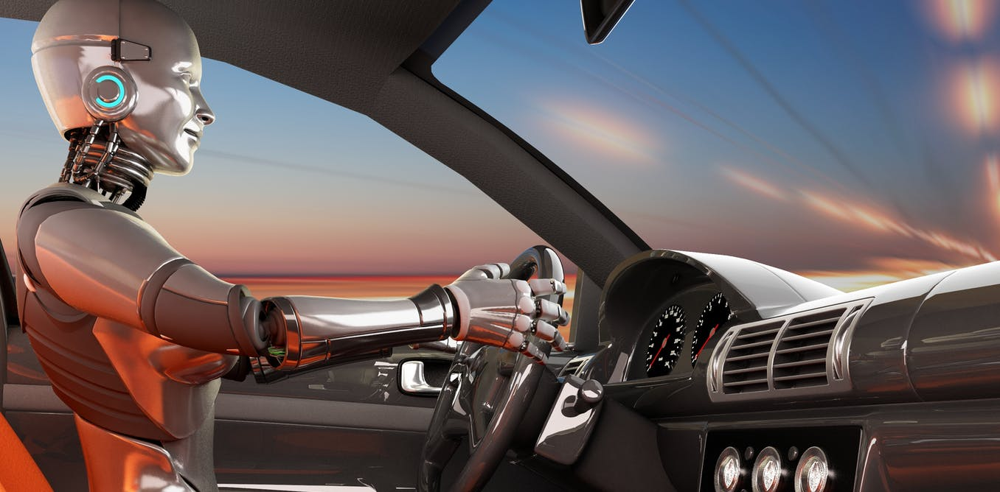

CyberSecurity in Information Technology
Machine Learning
What does it do?
Machine learning is an application of AI, the state-of-the-art piece of this product is that it is learning something new every day, it allows a system
to teach itself automatically while it is working. It automatically learns to improve itself by its own experiences that are happening in the moment
without someone having to program it or interfere with it programming to make it work more efficient. It focuses on developing computer
programs that it can access the data from and use that data to teach itself new things without any human interaction. It learns to look for patterns
in the data that will help it to make better decisions for future based activities so it can perform more quickly and more efficiently
than it would with human intervention.
Some of the machine leaning methods are.
Supervised machine learning algorithms can use what it has learned by using examples to predict future events. It will start by analyzing known data set and learning algorithm and inferred
functions to predict output values. The system can provide targets for any new input after sufficient training. It can also compare its output to find errors in order to modify correctly.
Unsupervised machine learning algorithms studies how systems can infer a function to describe a hidden structure from unlabelled data. The machine doesn’t work out the right output but
explores the data and can draw inferences from datasets to describe hidden structures from unlabeled data.
Semi-supervised machine learning algorithms is in-between supervised and unsupervised learning. They are both labelled and unlabeled data for training. These systems can improve learning
accuracy. This system is chosen when the acquire labelled data requires skilled and resources to train it.
Reinforcement machine learning algorithms interacts with its environment by producing actions and discovering mistakes and rewards. This allows the agents to determine behavior with
specific context to maximize performance with reward feedback for the person to learn which is the best action.
Machine learning allows the analyzing of massive amounts of data to be done more quickly and more accurately in order to identify safe or dangerous risks
This technology and its development will change the way we do things like learning how to drive our cars, our car will drive itself.
It can write things out for you like a newspaper and have little to no errors at all thus eliminating the use for human intervention in correcting errors.
Machine learning can also pick up new skills like matching you with a perfect match on tinder (even though sometimes that doesn’t work out too well).
It can learn to predict things like the weather, the lotto, shopping trends etc.
Machine learning can also help us with the environment on how to develop strategies to keep our environment safe and healthy for everyone and help people in 3rd world countries to develop
new technologies to help their people have a better standard of living and life especially through farming by telling them what crops to grow and what time of year to grow them depending
on there environment and weather patterns and soil conditions for that country. Also, what animals to keep fand where to keep them or food production in accordance with their climate.
Computer vision is the application of computers to diagnose problems with people’s eyes with extensive eye exams allowing doctors to diagnose problems sooner and apply treatment quicker
and help save people’s eyesight.
We won’t have to use cash or plastic cards anymore; we will literally have a cashless society with a chip in our hand or something similar, we just wave our hand across a scanner every
time we need to purchase goods and pay bills.
Brain computer interfaces will be becoming everyday events with people getting retinal implants which will be as common as laser eye surgery today.
Brain implant therapies for people who are paralyzed by spinal cord injury or other neurological damage are being developed today and the technology is improving all the time.
Most large companies have realized the advantage of machine learning.
Institutions like Banks, governments, health care, retail, transportation among others are all using machine learning and algorithms to help them function more efficiently, make more money and
employ less people.

What is the likely impact?
The potential impact of this development is there will be a lot more jobs in the field of machine learning development as machines will take the place of people and we will not need so many people
in the work force which will put a lot more people on the unemployment queue. Maybe people will have more leisure time and work shorter hours and do work share positions.
It will help people with serious medical conditions to get state of the art technology to improve their health and even save their lives.
Some of our current technologies will be made obsolete in the in the future due to the changes that will happen in our society as we get more reliant on technologies.
I believe that everyone will be impacted by these changes to some degree or another, how that happens will depend on what areas of employment that the people work in. I believe that older people
maybe over the age of 50 would be mostly affected in the workplace as they are not really trained up in technology like the younger generation and find it hard to get their heads around it.
Some of the jobs that would be lost due to machine technology are data entry clerks, warehouse workers, cashiers, switchboard operators, factory workers, bank tellers, travel agents.
Its not all bad news though as there are new jobs created by new technology
automation administrator, AI trainers, BPA programmer, chatbot copywriter, machine relations manager and tech ethics and more.
It’s only just over 50 years since computers were starting to be used by large companies and they were very big and took up a large room.
How will this affect you?
It may affect me in my daily life as the technology advances could replace my job as a web developer as there are now programs available that can effectively build website. So, the job for the web
developer will be to debug the web site and make sure that the contents of the page have not been used before.
As a student computer scientist, I would be more likely to be spending more time at home working instead of travelling to the office every day for work or travelling to the university for studying.
I would be able to spend more time with family and friends since I would be working from home which would eliminate the need for travel and give me more recreational time.
My family members and my friends would be very happy if this was the case as they would probably be in the same situation as I was in so we would be able to spend more time doing things like going
to the movies, going down the beach, playing golf, going swimming and spending time just hanging around in enjoying each other’s company.
Raspberry Pis, Arduinos, Makey Makeys and other small computing devices
Every Electrically powered appliance in our lives can be turned either on or off. It is useful to be able to send commands to our appliances,
telling them exactly what to do, and when to do it. This application can be used in everything from lighting up thousands of specific pixels on your computer
screen, to telling your coffee machine to turn on when you hit your alarm.
Historically, small gates called transistors would be used to detect when you hit your alarm, then allow electricity to flow through to your coffee machine in
order to turn it on. In this example, this doesn't seem impractical, but in the case of massive computers, or megapixel scale computer screens, laying each
transistor individually in order to produce a complex output, for every single program a person could think of, it’s better to turn toward microprocessors.
Microprocessors still consist of transistors and other gates, the difference here is that microprocessors allow a person to upload custom code in the form of
binary. Using this input code, a microcontroller then sends a series of electrical outputs in order to power a device. Our lives are made even easier with
programs which can take almost english like text, and convert it the needed into binary, to then be used to produce the desired electrical output.
Microcontrollers, such as the popular ATmega8, can perform exactly this task. These small chips however, are still not very popular for amateur use. These
chips lack the interface to quickly and painlessly create, upload and properly wire a circuit/program. Adding some simple voltage regulators along with SIL
connectors, and other electronics, and the world famous arduino is created. The arduino is popular amongst hobbyists, as in a very short period of time, a
computer can be used to upload the required code, wires appropriately placed, and components or other electronic devices connected, in order to perform a
potentially complex task from start to finish in only a few minutes. Considering this is done with equipment able to fit in a person’s pocket, and the spare
change in an average person’s wallet able to fund it, this is unprecedented in history, and truly evident of our great technological developments. Seated at
the right hand of Arduino is Raspberry Pi.
Similar to arduino, being able to take input in the form of code and in the case of certain models of Raspberry Pi, produce a custom electrical output or take
an electrical input, Raspberry Pi is more similar in function to that of a laptop. While Arduino takes commands in the form of binary code, Raspberry Pi uses
an operating system, usually a specialized form of linux. This operating system can run programs, and send an output to an HDMI port or even take input
through a mouse and keyboard.
In the Alarm Clock/Coffee Machine example, one single transistor is needed. The processor chips on these boards however, contain from hundreds of thousands to
several billion transistors. Over the past few decades, the transistor technology has developed from being bigger than a wallet, to being only a few atoms in
size.
This can be credited to some incredible minds that have built facilities able to craft objects on the atomic scale, and amateur developers seeking to make the
technology even better and more versatile.
Every year the logic gates in these chips will continue to get smaller, and as such, every year these pieces of technology will get cheaper and easier to use.
Given this, it may become typical that the average person is willing to make use of these technological wonders, and make their lives easier and smarter.

First Transistor

Newest, Smallest Transistor
The Great benefit of these products becoming popular amongst the average consumer is automation. If people understand how to use the technology, and have access to it, the idea is that the average person sees opportunities where these microcontrollers can be implemented, and both automate their lives or even businesses, and simultaneously learn about how robots work, and learn about other industrial purposes of microcontrollers. It would yield the world more time, and potentially money saved if everyone started using microcontrollers regularly. It could even prove to the world how much can be replaced by these small computers, thus bringing fuel to the rise of robots. If this is the case however, there is a general question about whether these automated machines will decimate the job market. It is logical to assume that if our lives and businesses become automated, that people working will be made redundant. This however I personally believe to be an unlikely event. While it is certain that specific jobs and specific workers may become redundant, the new field of robotics allows for an incredibly broad set of new skills that will become in demand. Unlike in the past, graphics designers will be required in order to create a user interface, software developers in order to write code, hardware developers in order to improve the technology, new workers will come even to simply assemble and maintain these machines, which would be an extremely critical component. This is a small list of the potential jobs created by an increase in the simple usage of microcontrollers. While it may be impossible to know for sure, it can be comforting knowing that the opportunities for employees will, in ways, certainly increase.
In the case of microcontrollers and microprocessors, as the technology improves, both cost, and availability will improve. When this happens, it is likely that the average person will make use of them. This would certainly and greatly benefit everyone. First people would learn about programming, which is an excellent skill to have especially in the changing job market. People would also learn about electronics and how they communicate with microprocessors. It would also improve creativity amongst people as a new branch of opportunities is created. To address the question of how the average person would use these in their life; the possibilities are seriously underestimated. Microcontrollers could be used in everything from making their own vacuuming robots, or making coffee once a person’s alarm has been pressed to fully automating their business or work. Microprocessors such as the Raspberry Pi have its own benefits. These could be used to make facial recognizing door bells, or fully fledged laptops. Another product popular on the market is the Makey Makey. This is a proud example of microcontrollers coming into the hands of average people, and these people further developing the technology. The Makey Makey is similar to Arduino. The difference comes in the demographic. This is a product made for younger children to learn about programming and electronics. The defining characteristics of this product are the simple programming, simple wiring, fun to use along with extreme ease of use. For my future children, and recommended for others, this is a product that will leap forward the development of this technology as it exposes them to the wonderful world that is programming, microprocessors, and microcontrollers.
Makey Makey Playing a Piano
Robotics in Information Technology
Today Robots are used for a vast majority of roles some of these are Robots for Medical and Police Training, Vacuum robots and in Automotive Manufacturing Industry. In the Automotive industry Robots are programmed to perform repetitive duties hundreds or thousands of times a day with no difference in quality this makes them very efficient saving time and money. This keeps vehicles manufactured at their lowest possible purchase price. It is known that in 2005 90% of all robots could be found in vehicle assembly plants around the globe. Robots are of Mechanical construction and are heavy machinery they require electrical components to control its motors or arms to move, and some level of computer programming to instruct it to perform certain movements in a sequence. The 3 major brands I have used previously are ABB Kawasaki and Rockwell Robots. An industrial robot with six joints closely resembles a human arm, it has the equivalent of a shoulder, an elbow and a wrist. Typically, the shoulder is mounted to a stationary base structure rather than to a movable body. This type of robot has six degrees of freedom, meaning it can pivot in six different ways. A human arm is of similar design just has weight limitations and gets tired after a few short hours. The future of Robotics Industry is expected to grow significantly in the near term with expectations that the sector could be worth $260 billion by the year 2030. Much of this growth would be in the Professional services sector such as cleaning, delivering and transportation.
In Automotive Manufacturing Robots have caused redundancies in the past at the Ford Motor Factory in Campbellfield and Geelong. By reducing the amount of people required in certain welding areas or high-risk working areas but the positive side to this is that the safety of workers was improved and less incidents had occurred after implementing Robotics into the Production Line. Later, factories working with robotics and humans were reportedly 85% more productive than without them. Dr. Jay Baron, former CEO of the Center for Automotive Research, has said of automotive robots. “Automation is necessary for safety, quality and productivity." Where machines replace humans as the dominant intelligence on the planet, such a scenario seems unlikely. However, business network PwC predicts that up to 30% of jobs could be automated by robots by the mid-2030s this is for concern as this has economic implications. Workers may need to retrain and upskill to find new work. Activities that require mainly physical and manual skills will decline by approximately 18% by 2030, while those requiring basic cognitive skills will decline by approximately 28%. There will be an even greater need for those with expertise in science, technology, engineering, and mathematics (STEM). Taxi Drivers, Truck drivers, Bus Drivers and Couriers may soon be replaced by self-autonomous driving cars in 5 years basically robots driving cars, affecting 20 million workers worldwide.
We may also see robots as a more integral part of our daily routine. In our homes, many simple tasks such as cooking, and cleaning may be totally automated. Similarly, with robots that can use computer vision and natural language processing, we may see machines that can interact with the world more, such as self-driving cars and digital assistants. Robotics will reshape the future of medicine. Surgical robots can perform extremely precise operations, and with advances in AI, could eventually carry out surgeries independently I don’t particularly like this as it will also make robots more efficient at killing us off. The ability for machines and robots to learn could give them an even more diverse range of applications. Future robots that can adapt to their surroundings, master new processes, and alter their behavior would be suited to more complex and dynamic tasks. Ultimately, robots have the potential to enhance our lives. As well as shouldering the burden of physically demanding or repetitive tasks, they may be able to improve healthcare, make transport more efficient, and give us more freedom to pursue creative endeavors.